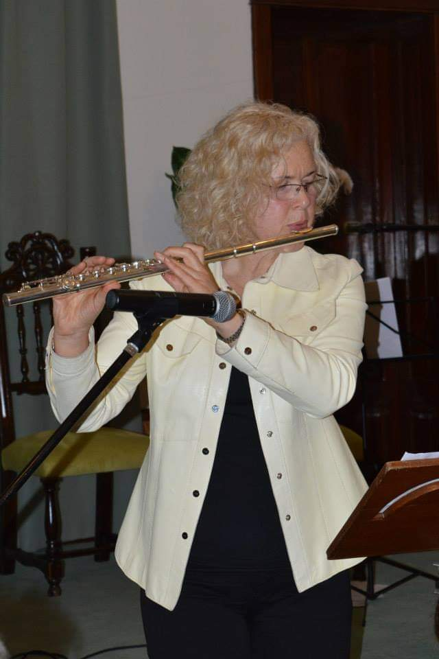

Elma Reimers
(Flauta 2)

Comenzó su formación musical a los 6 años, estudiando piano.
A los 22 años comenzó a estudiar flauta traversa en el Conservatorio de Música de Bahía Blanca, interrumpiendo el cursado cuando nacieron sus hijos, Alexis de 35 años y Christopher de 27.
Fue alumna de las profesoras Eugenia Gallegos y Adriana Fernandez.
Es profesora de artes en música y actualmente está cursando la Licenciatura en Música de cámara y sinfónica en la Universidad de Nacional de Lanús.
Ha tocado en grupos de cámara y en la Banda Sinfónica de Bahía Blanca.
El 3 de abril de este año tuvo la oportunidad de tocar un concierto junto con sus hermanas Luisa y Silvina en la ciudad de Florencia, Italia, con motivo de una invitación que recibieran de la organización ADRA Italia. Este mismo concierto lo han vuelto a tocar en Bahía Blanca con el título “Recuerdos de Firenze”, teniendo gran repercusión en nuestro medio.
Se ha desarrollado como profesora de música en nivel inicial, primario y secundario. También ha dirigido coros vocacionales, como el Coro municipal de Villa Iris, Coro de la Iglesia Adventista y Conjunto Vocal masculino “En Su nombre”.